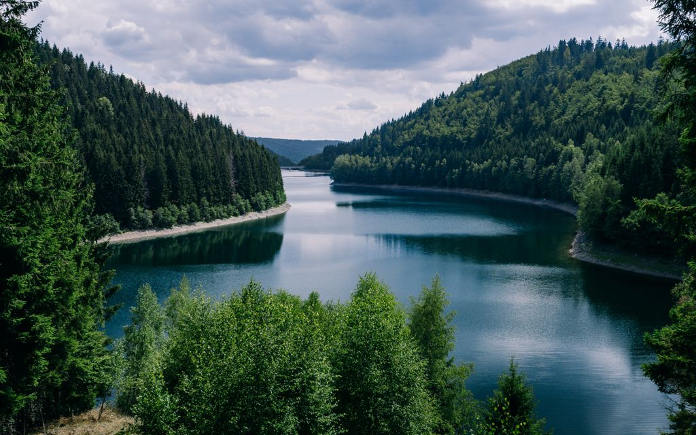

Preservar o meio ambiente é fundamental,
é nele onde estão os recursos naturais
necessários para a nossa sobrevivência,
como água, alimentos e matérias-primas. Sem esses recursos,
todas as formas de vida do planeta poderão acabar.

a natureza é exuberante com suas maginificas paisagens. O que a natureza nos transmite? Muita serotonina nos deixar irritados e tensos, enquanto baixos níveis podem levar à depressão. Sendo assim, respirar ar puro ajuda a regular essa relação e promove a sensação de felicidade e bem-estar.